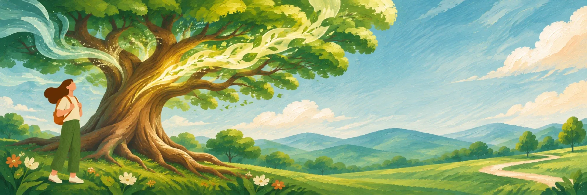

Дерево
из воздуха
Положите ладонь на ствол старого дуба. Под рукой — десятки тонн твёрдого, тяжёлого вещества. А теперь простой вопрос, на который почти никто не отвечает правильно: откуда эти тонны взялись? Ответ звучит как шутка, но это строгая физика и химия: дерево почти целиком сделано из воздуха. И именно поэтому деревья — главные союзники человечества в борьбе с перегревом планеты.
Откуда берутся тонны
Начнём не с книги, а с прогулки. Найдите рядом с домом большое дерево — дуб, липу, старую берёзу — и приложите ладонь к коре. Почувствуйте, насколько оно плотное и неподвижное. Ствол, который не обхватить руками, ветви толщиной с человека, крона, закрывающая полнеба.
Старый дуб весит десятки тонн. Если взять дерево в двадцать тонн, это вес нескольких гружёных самосвалов. Двадцать тысяч килограммов вещества, которое можно потрогать, распилить, сжечь.
А ведь когда-то этот дуб был жёлудем. Жёлудь весит несколько граммов. Прошло полвека — и на месте этих граммов стоят двадцать тонн. Значит, почти все двадцать тысяч килограммов пришли откуда-то снаружи. Вещество не возникает из ничего — это один из самых надёжных законов природы. Так откуда?
Большинство людей отвечает сразу и уверенно: из земли. Корни уходят в почву, тянут из неё соки, дерево «питается землёй». Мы говорим «плодородная почва», «удобрить землю», «посадить в землю». Здравый смысл не видит здесь никакой загадки.
И здравый смысл ошибается. Почти полностью. Эта статья — о том, почему, и о том, как один этот ответ меняет взгляд на леса, на дрова в печке, на уголь, на климат и даже на собственное дыхание.
Учёный, который взвесил землю
Почти четыреста лет назад этот вопрос задал себе фламандский врач и естествоиспытатель Ян Баптист ван Гельмонт. И сделал то, до чего до него никто не додумался: не стал спорить, а взвесил.
Он насыпал в большой глиняный горшок двести фунтов высушенной земли, посадил туда ивовый прут весом около пяти фунтов, накрыл горшок крышкой с отверстиями, чтобы внутрь не попадала пыль, и пять лет только поливал иву дождевой водой. Больше в горшок не добавлялось ничего.
Через пять лет ива весила около ста шестидесяти девяти фунтов. Прибавка — больше семидесяти килограммов. Ван Гельмонт снова высушил землю и взвесил её. Если дерево «ест землю», почвы должно было заметно убавиться. Она потеряла около двух унций — меньше шестидесяти граммов.
только
дождевая
вода →
Для своего времени это был ошеломляющий результат. Ван Гельмонт сделал из него вывод, который казался единственно возможным: раз он добавлял в горшок только воду, значит, дерево выросло из воды. Он был прав наполовину — и эта половина оказалась самой неожиданной частью ответа.
Чтобы найти вторую половину, науке понадобилось ещё полтора века. Нужно было открыть, что воздух — не однородная «стихия», а смесь газов. Джозеф Блэк описал «связанный воздух» — углекислый газ. Джозеф Пристли и Антуан Лавуазье открыли и объяснили кислород. Голландский врач Ян Ингенхаус показал, что зелёные листья на свету поглощают «испорченный» воздух и выделяют «живительный». Только тогда картина сложилась целиком.
Дерево сделано из воздуха
Вот этот ответ — медленно, потому что с первого раза мозг его отталкивает. Почти вся твёрдая масса дерева — это бывший воздух. Ствол, ветви, кора, корни — это газ, который когда-то свободно плавал вокруг, невидимый и почти невесомый, а потом был пойман, разобран на атомы и сложен в твёрдое вещество.
Звучит как фокус. Как из прозрачного газа может получиться бревно, на которое можно сесть? Давайте разберёмся, из чего дерево состоит на самом деле. Если отдать кусок высушенной древесины на химический анализ, лаборатория вернёт примерно такой ответ.
Углерод — половина сухой массы. Каждый второй атом в полене — углерод. И в почве дерево его не берёт: каждый атом углерода в древесине когда-то был частью молекулы углекислого газа в воздухе. Кислород — частично из того же CO₂, частично из воды. Водород — из воды. Всё вместе это около девяноста девяти процентов.
Из земли приходит только остаток — примерно процент. Азот, фосфор, калий, кальций, магний, железо и ещё десятки элементов в следовых количествах. Они жизненно необходимы: без магния не бывает хлорофилла, без фосфора клетка не может запасать энергию, без азота не построить ни одного белка. Но по массе это специи, а не мука. Если дуб весит двадцать тонн в сухом выражении, из почвы он взял порядка двухсот килограммов. Остальное — воздух и дождь.
Именно эти два унции, которые потерял горшок ван Гельмонта, и были минеральной частью. Он измерил её с поразительной точностью — просто не знал, что держит в руках.
Как поймать редкий газ
Самое удивительное начинается, когда понимаешь, насколько редок в воздухе этот строительный материал. Углекислого газа в атмосфере около 0,04 процента: примерно четыре молекулы на десять тысяч. Представьте мешок с десятью тысячами горошин, из которых нужные вам — четыре. А дерево собирает из таких «горошин» десятки тонн.
Делает оно это за счёт огромной площади. У крупного взрослого бука может быть порядка двухсот тысяч листьев с общей площадью больше тысячи квадратных метров — больше теннисного корта, причём сложенного так, чтобы поместиться в одну крону. Вся эта поверхность работает как сеть, растянутая в воздухе, — сеть для ловли молекул CO₂.
Лист — фабрика твёрдого из газа
Посмотрим, как устроен этот улов. На нижней стороне листа — тысячи микроскопических пор, устьиц. Через них лист «дышит»: впускает воздух внутрь, к влажным клеткам. Там молекулы CO₂ растворяются в воде клеточных стенок и попадают туда, где их ждёт главная машина.
Вода, поднятая без насоса
Но сначала — вода, без которой ничего не получится. Корневая система дерева — это огромная подземная сеть, часто не меньшая, чем крона над землёй. Тончайшие корневые волоски всасывают воду с растворёнными минералами. А дальше происходит то, что инженеры до сих пор считают маленьким чудом: вода поднимается на десятки метров вверх — без насоса, мотора и электричества.
Работает здесь чистая физика. Вода испаряется с поверхности листьев, и это испарение тянет за собой непрерывный столб воды по тончайшим сосудам ствола. Молекулы воды держатся друг за друга (когезия) и за стенки сосудов (адгезия), поэтому столб не рвётся. Это называется транспирацией. Большое дерево в жаркий день прокачивает через себя сотни литров. И большая часть этой воды вовсе не нужна для химии — она испаряется обратно в небо, охлаждая лист и подпитывая облака. Для самого фотосинтеза требуется лишь малая доля.
Ловец солнечного света
Внутри клеток листа — хлоропласты, крохотные зелёные органеллы размером в несколько микрометров. Зелёные они из-за хлорофилла. У хлорофилла есть свойство, на котором держится почти вся жизнь на Земле: он поглощает свет и превращает его энергию в химическую работу.
Фотон, порция света, вылетевшая из Солнца примерно восемь минут назад и пролетевшая около ста пятидесяти миллионов километров, попадает в молекулу хлорофилла и выбивает её электрон на более высокий энергетический уровень. Этот «толчок» запускает цепочку реакций: десятки промежуточных стадий, две фотосистемы, электрон-транспортная цепь и, наконец, цикл Кальвина, где и происходит сборка.
Задача у всей этой машины, по сути, одна: разорвать молекулу углекислого газа. CO₂ — очень устойчивая молекула, углерод прочно держится за свои два атома кислорода. Чтобы отделить его, нужна энергия — и её даёт Солнце. Растение соединяет углерод с водородом, взятым из воды, и собирает молекулу сахара — глюкозы. Лишний кислород выпускается через устьица наружу.
6 CO₂ + 6 H₂O + свет → C₆H₁₂O₆ + 6 O₂
Вдумайтесь в одну деталь. Кислород, без которого мы не проживём и нескольких минут, для растения — побочный продукт. Растению нужен углерод, а кислород остаётся лишним и уходит в воздух. Всё, чем дышат животные на суше и в океане, — это, по сути, «выхлоп» фотосинтеза. (О том, какую долю кислорода дают именно деревья, а какую — океан, честно поговорим ниже.)
Масштаб этой работы трудно представить. Растения суши ежегодно связывают в ходе фотосинтеза порядка ста двадцати миллиардов тонн углерода. Большую часть они тут же тратят на собственное дыхание, часть уходит в листья, корни и опад, а часть — нарастает новой древесиной.
Из сахара — в бревно
Глюкоза — лишь полуфабрикат. Из неё растение собирает всё остальное. Целлюлоза — это длинные цепочки из тысяч звеньев глюкозы, уложенные в прочные волокна. Лигнин пропитывает и склеивает эти волокна, превращая их в жёсткую конструкцию — примерно как бетон держит арматуру. Из тех же сахаров строятся смолы, дубильные вещества, масла, пигменты. И в каждой из этих молекул каждый атом углерода когда-то был молекулой CO₂ в воздухе.
Ствол — бывший воздух. Ветви — бывший воздух. Кора — бывший воздух. Даже корни, уходящие глубоко в почву, построены из углерода, который пришёл сверху, из листьев, а не снизу, из земли.
В популярных рассказах о фотосинтезе часто говорят, что энергия света в листе «одновременно проходит все пути и выбирает лучший» благодаря квантовой когерентности. Эксперименты 2000-х годов действительно увидели квантовые эффекты на первых стадиях переноса энергии. Но последующие работы показали, что эти эффекты очень кратковременны и, скорее всего, не играют той решающей роли, которую им приписывали. Поглощение света хлорофиллом — бесспорно квантовое событие. А вот «квантовый навигатор» внутри листа — пока открытый научный спор, а не установленный факт.
Огонь в печи — фотосинтез наоборот
Теперь возьмём полено и бросим его в печь. Что происходит, когда дерево горит? Целлюлоза и лигнин соединяются с кислородом воздуха — и получаются углекислый газ и водяной пар. Ровно те же вещества, из которых дерево когда-то себя построило.
Углерод, который листья десятилетиями по молекуле вылавливали из воздуха, за один вечер возвращается в воздух. Вода, поднятая корнями, уходит в трубу паром. А тепло и свет пламени — это та самая солнечная энергия, которую хлорофилл когда-то поймал и спрятал в химических связях. Горящее полено — как старая грампластинка: свет Солнца был записан на молекулы целлюлозы, и огонь проигрывает эту запись обратно, только вместо музыки — жар.
Этот домашний опыт — самый честный ответ на вопрос «сколько дерева пришло из земли». Сожгите полено полностью, и от килограмма дров останется горстка золы в несколько граммов. Это минералы из почвы. Всё остальное улетело обратно туда, откуда пришло, — в атмосферу.
Заодно понятно, почему дерево такое лёгкое по сравнению с камнем или металлом. Камень — это минералы, спрессованные недрами. Металл — плотно упакованные тяжёлые атомы. А древесина — организованный бывший газ, пронизанный тончайшими каналами, по которым когда-то текла вода. При этом инженерно она великолепна: волокна целлюлозы уложены слоями и спиралями, давая сочетание гибкости и прочности. Прочность лучших древесин и бамбука в пересчёте на вес сопоставима со сталью, а секвойи, построенные из воздуха и воды, вырастают выше ста метров и стоят тысячелетиями.
Каждый деревянный стол, дверь, карандаш, паркет — это бывшая атмосфера, собранная солнечным светом.
Атом, который был всем
Откуда в воздухе берётся углекислый газ, который ловят деревья? Вы выдыхаете его прямо сейчас: ваше тело «сжигает» глюкозу из еды и выдыхает CO₂. Его выпускает двигатель автомобиля, печь, электростанция, лесной пожар, вулкан, гниющий пень. И всё это деревья подхватывают и встраивают в свои стволы.
Отсюда мысль, от которой немного кружится голова. Атомы углерода не создаются и не исчезают — они только переходят из одной формы в другую. Атом, который сегодня сидит в годичном кольце берёзы за вашим окном, мог побывать в вулканическом газе, в древней водоросли, в раковине морского существа, в известняке на дне моря, снова в вулкане, в папоротнике мелового периода, в динозавре, который этот папоротник съел, в почве, в воздухе — и только потом в берёзе.
Ни один атом углерода в дереве не был создан этим деревом. Дерево берёт его взаймы — на десятилетия, иногда на века. Когда оно упадёт, грибы и бактерии разберут его древесину обратно на CO₂ и воду, и углерод отправится дальше. Это и есть углеродный цикл, о котором говорят в новостях: не абстрактная схема, а бесконечное путешествие одних и тех же атомов.
И здесь есть очень личная сторона. Вы выдыхаете углекислый газ — и рано или поздно лист какого-нибудь дерева поймает одну из ваших молекул. Атом углерода, который побывал в вашей крови, может оказаться в стволе сосны за тысячу километров от вас. Старая липа на деревенской площади, которой триста лет, хранит в своих кольцах углерод, выдохнутый людьми петровской эпохи. Дерево — это материальная память дыхания поколений. А годичные кольца — ещё и летопись климата: по их толщине и составу дендрохронологи восстанавливают погоду прошлых веков.
Уголь — это лес, ставший камнем
Отступим ещё дальше в прошлое. Около двух с половиной миллиардов лет назад атмосфера Земли почти не содержала кислорода. Первыми фотосинтез «изобрели» цианобактерии — крошечные одноклеточные, дальние предки хлоропластов в каждом листе. Сотни миллионов лет они выпускали кислород как побочный продукт. Он окислил железо в океанах — так образовались многие железорудные залежи, которые мы добываем до сих пор, — а потом начал копиться в воздухе. Это событие называют Великим кислородным. Без него не появились бы ни животные, ни мы.
Около трёхсот миллионов лет назад, в каменноугольном периоде — задолго до динозавров — Землю покрывали болотные леса из гигантских плаунов и хвощей высотой в десятки метров, над которыми летали стрекозы с размахом крыльев около семидесяти сантиметров. Эти леса миллионы лет вытягивали углерод из воздуха. Падая в болота, деревья оказывались в воде, где почти нет кислорода и гниение идёт очень медленно. Слой за слоем древесина погребалась под осадками, сжималась, нагревалась и превращалась в торф, затем в бурый и, наконец, в каменный уголь.
Уголь — это древний лес. Древний воздух, пойманный древними листьями и запертый в земной коре. Нефть и природный газ — похожая история, только их главным источником была микроскопическая морская жизнь. Разведанных запасов угля на планете порядка триллиона тонн. Когда электростанция сжигает уголь, она выпускает в небо CO₂, который растения выловили из воздуха сотни миллионов лет назад. Человечество открывает углеродный сейф, который природа запирала невообразимо долго, и опустошает его за пару столетий.
Почему это важно именно сейчас
Вот здесь история о дереве из воздуха перестаёт быть просто красивой. Углекислый газ — не только строительный материал для деревьев. Это ещё и парниковый газ. Солнечный свет свободно проходит сквозь атмосферу и нагревает землю, а нагретая земля отдаёт тепло обратно — в виде невидимого инфракрасного излучения. Молекулы CO₂ это излучение поглощают и переизлучают во все стороны, в том числе обратно вниз. Они работают не как зеркало, а как одеяло: не греют сами, но не дают остывать.
Немного такого одеяла — благо: без парникового эффекта средняя температура Земли была бы около минус восемнадцати градусов. Но до промышленной эпохи в воздухе было около 280 молекул CO₂ на миллион, а сегодня — около 425. Это больше, чем когда-либо за сотни тысяч лет, и причина известна точно: ежегодно человечество сжигает уголь, нефть и газ и сводит леса, выбрасывая около сорока миллиардов тонн CO₂. Мы выпускаем древний углерод из сейфа быстрее, чем природа способна его вернуть.
ископаемое топливо + вырубки
прежде всего леса
Почти половина наших выбросов остаётся в воздухе и подтыкает одеяло всё плотнее. Около четверти растворяет океан. Около трети забирает суша — и главные работники здесь растущие леса. По глобальным оценкам, леса мира ежегодно связывают около 15,6 миллиарда тонн CO₂, но вырубки, пожары и деградация возвращают в воздух около 8,1 миллиарда. Чистый вклад лесов — около 7,6 миллиарда тонн в год, примерно пятая часть всех человеческих выбросов.
Теперь понятно, почему вырубка леса — это не только потеря красоты. Срубленное дерево, сгнив или сгорев, отдаёт воздуху весь углерод, который копило десятилетиями. Вырубленный лес — вскрытый склад углерода. А каждое новое растущее дерево — маленький насос, который откачивает CO₂ из атмосферы в твёрдое хранилище. Причём самые мощные насосы — старые большие деревья: у большинства видов годовой прирост древесины с возрастом не падает, а растёт. И почти половина лесного углерода хранится не в стволах, а в почве под ними, поэтому сохранить старый лес важнее, чем посадить новый.
Для России это вопрос особый: здесь около пятой части всех лесов планеты, и тайга — один из крупнейших наземных стоков углерода. И одновременно один из самых уязвимых: пожары последних лет в Сибири за один сезон выбрасывали в воздух сотни миллионов тонн CO₂.
Теперь — честно
Хорошее объяснение обязано показывать, где оно упрощает. Вот несколько мест, где рассказ о деревьях часто уходит дальше фактов.
«Дерево сделано из воздуха» — почти правда. Точнее: из воздуха и воды, плюс около процента минералов из почвы. И живое дерево ещё наполовину состоит из воды в тканях — проценты выше относятся к сухой древесине.
«Весь кислород — подарок деревьев» — преувеличение. Примерно половину кислорода Земли производит океанский фитопланктон. А взрослый лес почти весь свой кислород сам же и расходует — на дыхание деревьев и разложение опада. Запаса кислорода в атмосфере хватит на тысячи лет. Леса бесценны не как «лёгкие», а как хранилище углерода, воды и жизни: в них обитают около 80% видов земноводных, 75% видов птиц и 68% видов млекопитающих.
Посадками нельзя «отменить» нефть и уголь. Только ископаемое топливо даёт около 37 миллиардов тонн CO₂ в год, а чистый сток всех лесов — около 7,6. Даже удвоив леса, мы не догоним выбросы. Деревья — помощь сокращению выбросов, а не его замена.
Дерево — медленное и не вечное хранилище. Саженец десятилетиями набирает массу, а пожар, засуха, жук-короед или топор возвращают углерод в воздух за один сезон. Посадить — это начало. Результат — выросший и сохранённый лес.
Не всякая посадка полезна. Ровные ряды одного вида на месте луга, степи или болота могут навредить: уничтожить естественные экосистемы, иссушить почву, а на севере — сделать поверхность темнее и теплее зимой. Сажать стоит местные виды и прежде всего там, где лес был.
Вернёмся к дубу
Вы снова стоите у того же дерева, ладонь на коре. Только теперь вы знаете, что перед вами. Двадцать тонн бывшего воздуха. Углекислый газ, пойманный листьями, вода, поднятая корнями на десятки метров, и солнечный свет, родившийся в термоядерной печи звезды и пролетевший сто пятьдесят миллионов километров, — всё это кольцо за кольцом, год за годом сложилось в ствол. Плюс щепотка минералов из земли.
Ричард Фейнман любил повторять, что знание не отнимает у мира красоту, а умножает её. Тот, кто знает, как устроен цветок, видит в нём не меньше, а больше. С деревом так же: человек, который знает, что ствол — это затвердевший воздух, скреплённый энергией Солнца, видит в обычной берёзе у дороги целую вселенную.
А ещё он видит выход. Деревья умеют делать то, что сейчас нужнее всего: забирать из воздуха углерод, которого там слишком много, и надолго прятать его в древесину и почву. Наша часть работы — перестать открывать древний углеродный сейф, беречь старые леса и помогать новым. И это уже не абстракция: вырастить своё дерево из жёлудя или семечка, подрастить, высадить и довести до взрослого может каждый. Об этом — следующий текст.
Читайте также: Как устроен лес: подземная сеть · Эволюция сознания — недостающее звено устойчивости · Круговорот углерода: одна лишняя стрелка · Кривая Килинга · Лесная медицина
- Ролик «Объяснения Фейнмана» о том, из чего сделано дерево, — идея и структура рассказа (YouTube).
- Van Helmont J. B. Ortus Medicinae (1648) — описание опыта с ивой; см. также обзор в учебниках истории биологии.
- Feynman R. «Fun to Imagine» (BBC, 1983) и «What Do You Care What Other People Think?» (1988) — о дереве из воздуха и о красоте знания.
- NOAA Global Monitoring Laboratory. Trends in Atmospheric Carbon Dioxide — концентрация CO₂ ~425 ppm.
- IPCC (2021). Climate Change 2021: The Physical Science Basis, WG I, гл. 5 и 7 — углеродный цикл и парниковый эффект.
- Friedlingstein P. et al. (2025). Global Carbon Budget 2024. Earth System Science Data 17, 965–1039.
- Harris N. L. et al. (2021). Global maps of twenty-first century forest carbon fluxes. Nature Climate Change 11, 234–240.
- Pan Y. et al. (2011). A large and persistent carbon sink in the world’s forests. Science 333, 988–993.
- Stephenson N. L. et al. (2014). Rate of tree carbon accumulation increases continuously with tree size. Nature 507, 90–93.
- Cao J. et al. (2020). Quantum biology revisited. Science Advances 6, eaaz4888 — о роли квантовой когерентности в фотосинтезе.
- FAO (2020). Global Forest Resources Assessment 2020; The State of the World’s Forests 2020.
- Lyons T. W., Reinhard C. T., Planavsky N. J. (2014). The rise of oxygen in Earth’s early ocean and atmosphere. Nature 506, 307–315.